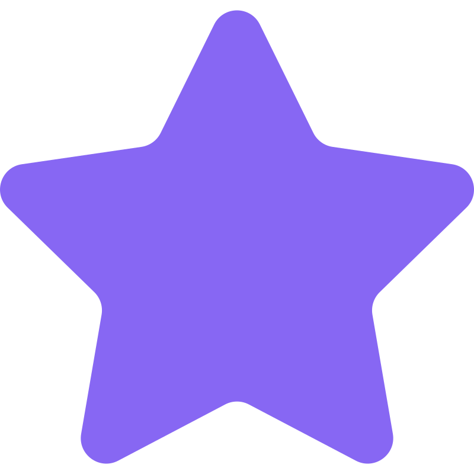

Grâce à SheCodesMentor, trouvez quelqu'un qui saura vous aider pour développer vos compétences.
Trouver un mentorBonjour, je suis Washa Silk, une ingénieure en génie logiciel de 25 ans. Je parle couramment le français et l'anglais. Si vous souhaitez en savoir plus, n'hésitez pas à me contacter à l'adresse e-mail washa.silk@email.com ou au numéro de téléphone 06 12 34 56 78.
25
Ans
Ingénieure logiciel
Métier

5/5
Bonjour, je suis Walik CHA, un ingénieur informatique âgé de 18 ans. Je parle couramment le français et l'anglais. N'hésitez pas à me contacter pour obtenir davantage d'informations. Vous pouvez me joindre à l'adresse e-mail walik.cha@email.com ou au numéro de téléphone 07 12 32 52 72.
18
Ans
Ingénieur informatique
Métier
1/5
Bonjour, je suis Sisha Walk, une ingénieure réseau de 42 ans. Je parle couramment le français et l'anglais. Pour en savoir plus, n'hésitez pas à me contacter à l'adresse e-mail sisha.walk@email.com ou au numéro de téléphone 07 11 22 33 44.
42
Ans
Ingénieure réseau
Métier
4/5
Chez SheCodesMentor, nous sommes passionnément dévoués à l'autonomisation des femmes dans le monde de la technologie. Notre histoire est celle d'une équipe de professionnels de la technologie, de mentors, d'éducateurs et de créateurs de communauté qui partagent une vision commune : créer un avenir numérique plus inclusif et diversifié.
Notre mission est simple mais puissante : éliminer les barrières qui empêchent les femmes de réaliser leur plein potentiel dans le domaine numérique. Nous croyons que chaque femme a le droit de briller dans le monde de la technologie, quel que soit son niveau de compétence ou son expérience.
Mentorat Personnalisé : Nous mettons en relation des femmes aspirant à des carrières numériques avec des mentors expérimentés qui les guideront, les conseilleront et les soutiendront dans leur parcours.
Communauté Dynamique : Notre communauté est le cœur de SheCodesMentor. Nous créons un espace où les femmes peuvent se connecter, s'entraider et se soutenir mutuellement à chaque étape de leur voyage numérique.
Ressources Éducatives : Nous offrons un accès à des ressources éducatives de qualité, des cours en ligne et des ateliers pour renforcer les compétences techniques et professionnelles.
Nous croyons que la diversité est la clé de l'innovation. C'est pourquoi nous nous engageons à promouvoir la diversité et l'inclusion dans tous les aspects de notre plateforme. Nous accueillons des femmes de tous horizons, origines et niveaux de compétence. Rejoignez-Nous !
Que vous soyez une étudiante enthousiaste, une professionnelle de la technologie chevronnée ou quelque part entre les deux, SheCodesMentor est là pour vous accompagner dans votre voyage numérique. Ensemble, nous construisons un avenir où les femmes sont des leaders et des innovatrices incontestées dans le domaine de la technologie.
Notre plateforme met en relation les femmes avec des mentors expérimentés dans le domaine de la technologie. Vous pouvez choisir un mentor qui correspond à vos objectifs et à vos intérêts. Les mentors vous guideront, répondront à vos questions et vous aideront à progresser dans votre parcours numérique.
Nos mentors sont des professionnels chevronnés de l'industrie technologique, y compris des développeurs, des experts en cybersécurité, des spécialistes de l'intelligence artificielle, et bien d'autres. Ils sont dévoués à soutenir la réussite des femmes dans le secteur numérique.
Pour rejoindre notre communauté, il vous suffit de vous inscrire sur notre plateforme. Vous aurez accès à notre forum de discussion, à des événements en ligne passionnants et à des opportunités de réseautage avec d'autres femmes passionnées par la technologie.
Oui, nous sommes toujours à la recherche de mentors passionnés pour rejoindre notre communauté. Si vous êtes un professionnel expérimenté dans le domaine de la technologie et que vous souhaitez aider d'autres femmes à réussir, vous pouvez nous contacter pour en savoir plus sur le mentorat sur SheCodesMentor.
L'inscription à SheCodesMentor est simple. Visitez notre site web, cliquez sur le bouton d'inscription, et suivez les instructions pour créer votre compte. Vous pourrez alors explorer nos mentors, nos ressources et nos événements.